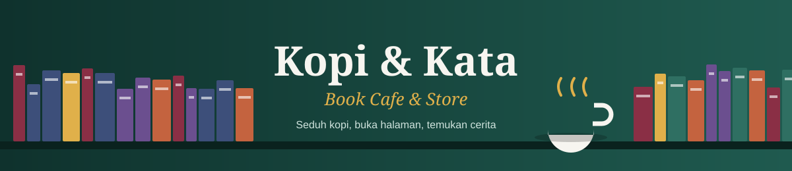

Kopi & Kata

☰ Menu
Home
About ▾
Profil
Sejarah
Visi & Misi
Tujuan
Struktur Organisasi
Artikel ▾
Tujuh Buku Fiksi Terbaik untuk M...
Mengenal Kopi Susu Aren, Menu Fa...
Klub Baca Bulanan: Cara Bergabun...
Gallery
Registration
Contact
📖 Klub Baca Sabtu ini pukul 15.00 • Diskon 10% buku baru untuk anggota • Kopi Susu Aren buy 1 get 1 setiap Jumat • Pendaftaran anggota dibuka! •
Pendaftaran Anggota
Gabung menjadi anggota untuk diskon buku dan ikut Klub Baca.
Nama lengkap
Email
No. HP
Tanggal lahir
Jenis keanggotaan
-- Pilih --
Pelajar / Mahasiswa
Umum
Keluarga
Genre favorit
Fiksi
Nonfiksi
Anak
Komik
Ikut Klub Baca?
Ya
Tidak
Daftar sekarang